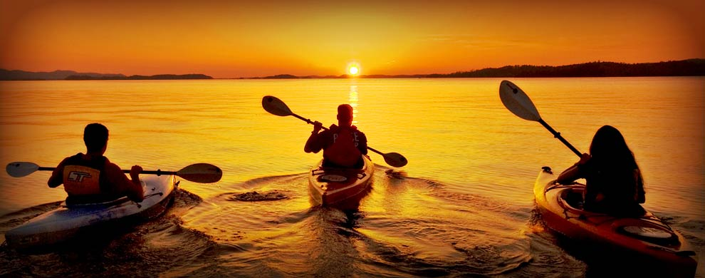

"I travel not to go anywhere, but to go. I travel for travel's sake. The great affair is to move."
"There are no foreign lands. It is the traveler only who is foreign."
"I have found out that there ain't no surer way to find out whether you like people or hate them than to travel with them."
Photgraphy
Some placeto expand horizons

Why travel?
The very basic core of a man's living spirit is his passion for adventure. The joy of life comes from our encounters with new experiences, and hence there is no greater joy than to have an endlessly changing horizon, for each day to have a new and different sun
Traveling is a brutality. It forces you to trust strangers and to lose sight of all that familiar comfort of home and friends. You are constantly off balance. Nothing is yours except the essential things - air, sleep, dreams, the sea, the sky - all things tending towards the eternal or what we imagine of it.
Quotes
Aldous Huxley
Your true traveler finds boredom rather agreeable than painful. It is the symbol of his liberty-his excessive freedom. He accepts his boredom, when it comes, not merely philosophically, but almost with pleasure.
Seneca
Travel and change of place impart new vigor to the mind.
Roy M. Goodman
Remember that happiness is a way of travel - not a destination.
As the traveler who has once been from home is wiser than he who has never left his own doorstep, so a knowledge of one other culture should sharpen our ability to scrutinize more steadily, to appreciate more lovingly, our own.